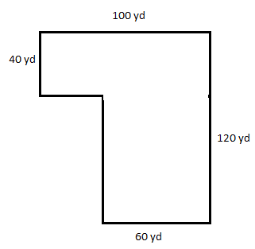
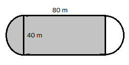
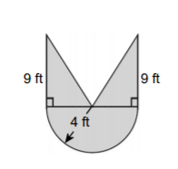
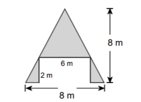

Geometry Unit
Test 3 Review with Answers
Dimensional Analysis for 10 points:
How many minutes is a student in class one semester if the student takes 12 credit hours? (Assume each class is one hour and 1 semester = 14 weeks.)
Dimensional Analysis for 20 points:
How many cubic feet of dirt fit in a crate with a volume of 14,400 cubic inches?
Dimensional Analysis for 30 points:
A sprinter runs 100 meters in 11 seconds. What is the sprinter’s speed in mph?
Perimeter and Area for 10 points:
How much fencing is needed to enclose the park?
Perimeter and Area for 20 points:
How many square miles are included in the state park shown?
Perimeter and Area for 30 points:
Find the area of the shaded region inside the track:
Surface Area and Volume for 10 points:
Find the amount of cardboard used to make a cereal box 30 cm tall, 20 cm wide, and 3 cm deep. (Assume no overlapping edges.)
Surface Area and Volume for 20 points:
What is the volume of a Pepsi can 4.8 inches tall with a diameter of 2.6 inches?
Surface Area and Volume for 30 points:
How many pounds would a king size feather pillow weigh if it were stuffed to a height of 6 inches? The dimensions of a king size pillow are 20 by 36 inches. Feathers weigh 0.02 grams per cubic cm.
More Practice for Exam 3
- A family pool holds 10,000 gallons of water. How many cubic meters is this?
- The average American high school student is in class 330 minutes/day. How many hours per day is this? How many seconds per day is this?
- Sixty mph is how many ft/sec?
- If a person weighs 125 lbs, 8 oz., how many milligrams does s/he weigh?
- A small herd of cattle consumes fourteen bales of hay in two weeks. How many bales will this herd consume in a year?
- During the previous year, Zach's weather station measured 0.8 yards of rain. Express this amount in cm.
- Saffron costs $368.00 per ounce. Determine how many grams you can purchase for $15.00.
- A gas station is charging $1.299 per gallon of gas. What would be the price for a liter of gas?
- A car consumes 25.00 gallons of fuel when driving a distance of 400.0 km. How many gallons will it consume when driving 250.0 miles?
- A standard piece of notebook paper measures 8.5 inches by 11 inches. How many square centimeters is this?
- A water balloon is in the shape of a sphere with a diameter of 6 inches. What is it’s volume in cubic feet? How many cups of water will it hold?
- Find the shaded area. 
- Find the shaded area. 
- You have some leftover soup in a can. The can has a radius of 5 cm and a height of 10 cm. How much plastic wrap will you need in square centimeters to completely cover the can?
- A company is deciding which box to use for their merchandise. The first box measures 8 inches by 6.25 inches by 10.5 inches. The second box measures 9 inches by 5.5 inches by 11.75 inches. Which box requires more material to make?
- Which box in question #15 holds more merchandise?